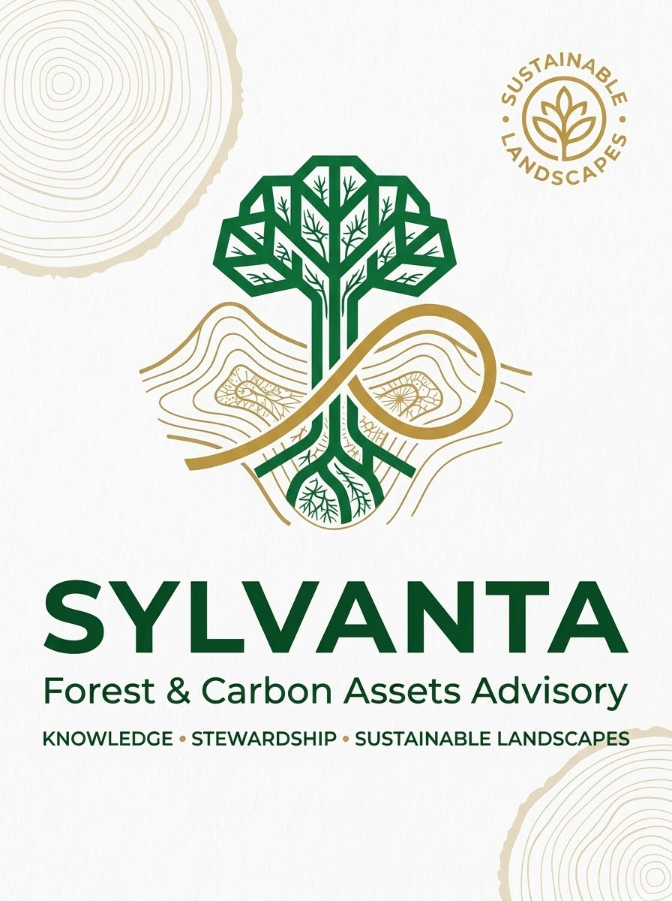

Forest & landscape advisory
Strategic guidance for forest resources, landscape planning, conservation priorities and sustainable land-use decisions.
Discuss this areaFORESTS · CLIMATE · NATURAL CAPITAL
Independent advisory for forests, carbon assets and natural capital — connecting sound knowledge with responsible stewardship and lasting landscape value.
A GROUNDED PERSPECTIVE
Sylvanta is an independent advisory practice focused on forests, carbon assets and the knowledge that helps landscapes thrive.
We connect ecological understanding with practical decision-making. Our perspective is grounded in sound evidence, transparent governance, inclusive stewardship and long-term care for natural resources.
Founder & Principal
Sylvanta is built around a simple conviction: lasting landscape outcomes begin with knowledge and are sustained through thoughtful stewardship.

OUR AREAS OF EXPERTISE
A considered, integrated view of forests, carbon assets and the landscapes that connect them.
Strategic guidance for forest resources, landscape planning, conservation priorities and sustainable land-use decisions.
Discuss this areaAdvisory support for understanding carbon opportunities, project concepts, integrity considerations and the evolving carbon landscape.
Discuss this areaEvidence-informed perspectives that help organisations consider climate risks, resilience options and landscape-level responses.
Discuss this areaKnowledge products, learning support and stakeholder engagement that strengthen understanding and responsible action.
Discuss this areaSupport for recognising natural assets, strengthening stewardship approaches and considering long-term landscape value.
Discuss this areaStructured analysis and practical insight to inform policy, programmes, investment thinking and landscape decisions.
Discuss this areaThree commitments. One connected vision for people, nature and the future.
A THOUGHTFUL PROCESS
Listen to stakeholders, clarify context and understand ecological, social and institutional conditions.
Bring together relevant knowledge, data and analysis to inform clear, transparent choices.
Identify practical options that balance ecological integrity, community considerations and long-term value.
Help translate insight into action, shared learning and adaptive management over time.
OUR PRINCIPLES
We value sound evidence, continuous learning and clear communication.
We place healthy ecosystems and credible environmental outcomes at the centre.
We recognise the importance of local knowledge, participation and shared responsibility.
We consider intergenerational value, resilience and the durability of decisions.
LET'S CONNECT
For advisory enquiries, collaborations or a conversation about your landscape priorities, contact Sylvanta.